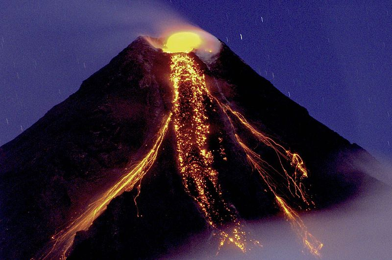
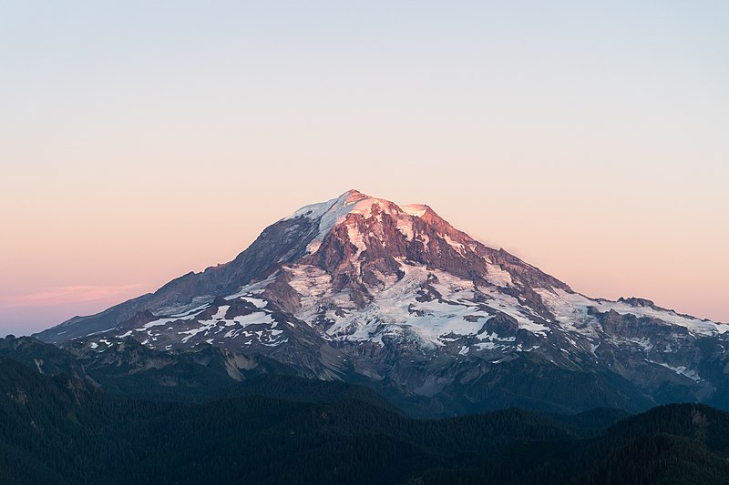

A stratovolcano, also known as a composite volcano, is a conical volcano built up by many layers (strata) of hardened lava and tephra.[1] Unlike shield volcanoes, stratovolcanoes are characterized by a steep profile with a summit crater and periodic intervals of explosive eruptions and effusive eruptions, although some have collapsed summit craters called calderas.
lava flowing from stratovolcanoes typically cools and hardens before spreading far, due to high viscosity.The magma forming this lava is often felsic, having high-to-intermediate levels of silica (as in rhyolite, dacite, or andesite), with lesser amounts of less-viscous mafic magma. [2] Extensive felsic lava flows are uncommon, but have travelled as far as 15 km (9 mi).[3]
Stratovolcanoes are sometimes called composite volcanoes because of their composite stratified structure, built up from sequential outpourings of erupted materials. They are among the most common types of volcanoes, in contrast to the less common shield volcanoes.[4] Two famous examples of stratovolcanoes are Krakatoa in Indonesia, known for its catastrophic eruption in 1883, and Vesuvius in Italy, whose catastrophic eruption in AD 79 buried the Roman cities of Pompeii and Herculaneum. Both eruptions claimed thousands of lives. In modern times, Mount St. Helens in Washington State, USA and Mount Pinatubo in the Philippines have erupted catastrophically, but with fewer deaths.
These internal triggers may be modified by external triggers such as sector collapse, earthquakes, or interactions with groundwater.These internal triggers may be modified by external triggers such as sector collapse, earthquakes, or interactions with groundwater. Some of these triggers operate only under limited conditions. For example, sector collapse (where part of the flank of a volcano collapses in a massive landslide) can trigger eruption only of a very shallow magma chamber. Magma differentiation and thermal expansion also are ineffective as triggers for eruptions from deep magma chambers.[14]
Whatever the precise mechanism, the pressure in the magma chamber increases to a critical point where the roof of the magma chamber fractures, and the contents of the magma chamber are provided with a path to the surface through which to erupt.[citation needed]
In recorded history, explosive eruptions at subduction zone (convergent-boundary) volcanoes have posed the greatest hazard to civilizations.[15] Subduction-zone stratovolcanoes, such as Mount St. Helens, Mount Etna and Mount Pinatubo, typicall y erupt with explosive force: the magma is too stiff to allow easy escape of v olcanic gases. As a consequence, the tremendous internal pressures of the trapped volcanic gases remain and intermingle in the pasty magma. Following the breaching of the vent and the opening of the crater, the magma degasses explosively. The magma and gases blast out with high speed and full force.[15] Since 1600 CE, nearly 300,000 people have been killed by volcanic eruptions. [15] Most deaths were caused by pyroclastic flows and lahars, deadly hazards that often accompany explosive eruptions of subduction-zone stratovolcanoes. Pyroclastic flows are swift, avalanche-like, ground-sweeping, incandescent mixtures of hot volcanic debris, fine ash, fragmented lava, and superheated gases that can travel at speeds over 160 km/h (100 mph). Around 30,000 people were killed by pyroclastic flows during the 1902 eruption of Mount Pelée on the island of Martinique in the Caribbean.[15] In March to April 1982, three explosive eruptions of El Chichón in the State of Chiapas in southeastern Mexico, caused the worst volcanic disaster in that country's history. Villages within 8 km (5 mi) of the volcano were destroyed by pyroclastic flows, killing more than 2,000 people.[15]